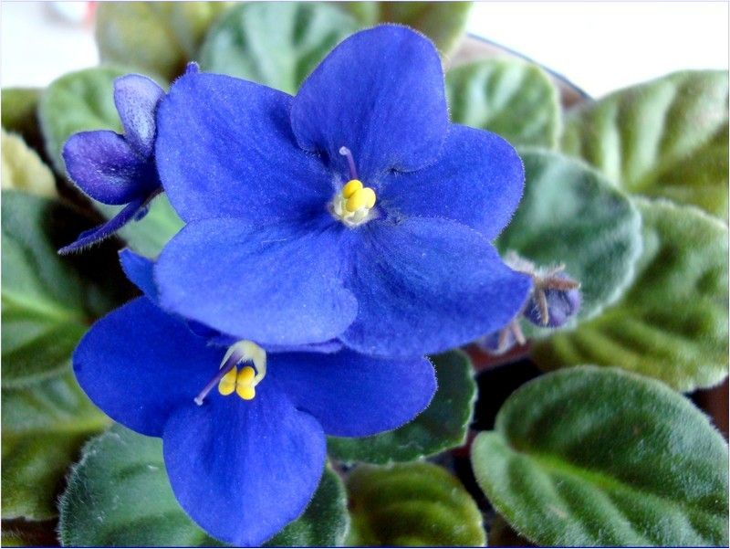
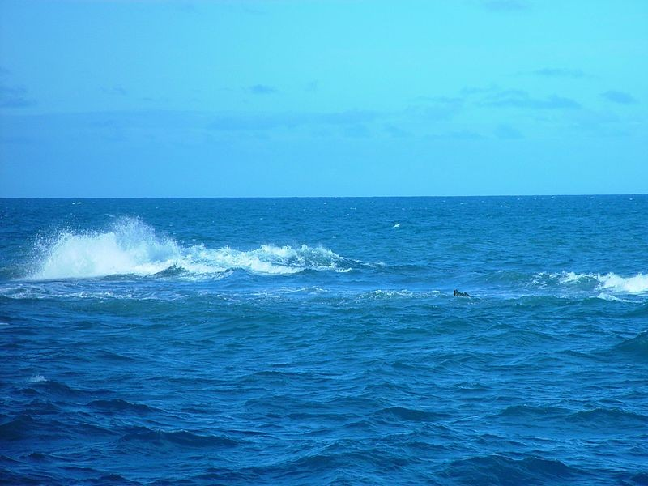

Azul
(Cerúleo, Anil e Índigo)
Seria com certeza a melhor cor se não existisse vermelho, mas não que o vermelho seja melhor. É primária no sistema RGB. Ela é uma cor muito boa de verdade, tão boa que continua no ranque S da tier list mesmo sendo a cor favorita de quase todo mundo na Terra. É uma cor associada à calmaria e à mente, então se você se considera uma pessoa racional, provavelmente ela é a sua cor favorita porque você com certeza já ouviu algo do gênero.
4 melhores coisas que são azuis
-
(Algumas) Violetas
Bonitas, mas nem todas são azuis.
-
Céu

É muito bonito, principalmente com as nuvens, mas nem sempre é azul.
-
Mar
Muito bonito também. Igual o céu, nem sempre é azul, principalmente quando jogam plástico nas tartaruguinhas, mas fica na frente por ter tartaruguinhas e outros animais.
-
Centro Federal de Educação Celso Suckow da Fonseca
Melhor escola técnica do país e tem os melhores alunos e professores. Mas isso é o curso de informática, não sei dos outros. Infelizmente não é totalmente azul.